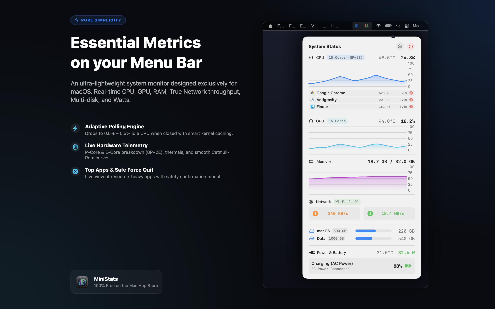
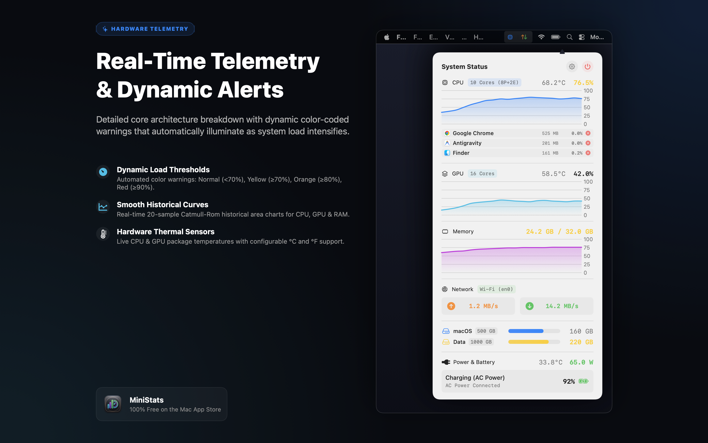
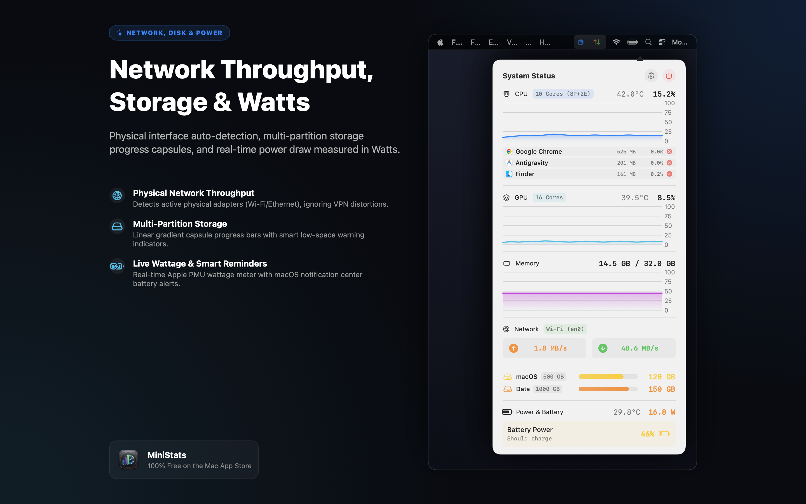

An ultra-lightweight, 100% free system monitor designed exclusively for macOS. Track CPU, GPU, RAM, True Network throughput, Multi-disk storage, Wattage draw, Top Apps, and Smart Battery reminders with near-zero energy impact.



Purpose-built from the ground up using modern Swift frameworks for modern Mac workflows.
Engineered with intelligent lifecycle hooks: when the dashboard popover is closed, background process scanning and heavy sensors pause automatically, reducing idle CPU usage to 0.0% – 0.5%.
High-precision utilization metrics, CPU Performance vs. Efficiency core breakdown (e.g. 8P+2E), GPU core count, hardware thermal sensors, and smooth Catmull-Rom historical area curves.
Real-time inspection of top CPU-heavy and memory-consuming applications with native app icons. Terminate unresponsive apps instantly, protected by a safety confirmation modal.
Color-coded visual alerts that intelligently update as hardware load increases: Normal (<70%), Yellow (≥70%), Orange (≥80%), and Red (≥90%) across Menu Bar, Dashboard, and Process lists.
Measures live power draw and charging rates in Watts (XX.X W) directly from the Apple Silicon PMU and AppleSmartBattery, with power source detection and battery runtime estimates.
Sends native macOS Notification Center alerts with audio when battery drops below 50% (Notice), 40% (Warning), and ≤30% (Critical) to help preserve battery lifespan.
Automatically scans and monitors all internal user volumes and disk partitions. Features modern Apple capsule progress bars with linear gradients and dynamic low-space warning indicators.
Monitors genuine physical network adapters (Wi-Fi, Ethernet) using macOS Dynamic Store, ensuring active VPN tunnels never inflate or distort your real physical bandwidth.
Displays actual memory used versus total system capacity (X.X GB / Y.Y GB), eliminating confusing percentages caused by macOS aggressive file-cache caching algorithms.
Toggle CPU %, Network speeds, or display a minimal gauge icon on your Menu Bar. Access a dedicated Settings panel (⚙️) with smooth transitions to tailor every parameter.
Switch seamlessly between 11 languages with zero app restarts: 🇬🇧 English, 🇩🇪 Deutsch, 🇫🇷 Français, 🇪🇸 Español, 🇵🇹 Português, 🇹🇷 Türkçe, 🇯🇵 日本語, 🇰🇷 한국어, 🇲🇽 Español (MX), 🇩🇰 Dansk, 🇻🇳 Tiếng Việt.
Clean autostart management using Apple's official ServiceManagement framework. No legacy helper daemons or invasive background agents left behind.
| Supported Platforms | macOS 14.0 (Sonoma), macOS 15.0+ (Sequoia) |
|---|---|
| Hardware Architectures | Universal 2 Binary (Apple Silicon M1/M2/M3/M4 & Intel Core x86_64) |
| Codebase & UI | 100% Native Swift 6, SwiftUI & Swift Charts |
| Idle CPU Usage | 0.0% – 0.5% (Adaptive Polling with SMC/IOHID caching) |
| Memory Footprint | ~15 MB – 25 MB |
| Security & Sandbox | Apple App Sandbox Enabled • 100% Offline • Zero Outgoing Connections |
100% Free • macOS 14.0 Sonoma or later • Universal 2 for Apple Silicon & Intel
MiniStats runs completely locally inside Apple's secure App Sandbox. It has zero tracking, zero analytics, zero external network requests, and never transmits your data anywhere. Your hardware statistics and running applications remain 100% yours.
Read Full Privacy Policy